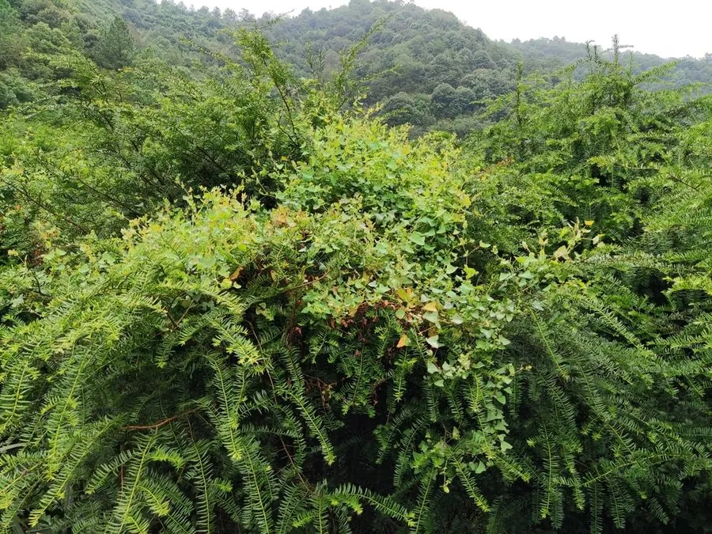

蕨类与裸子植物 · 植物界
红豆杉 Taxus wallichiana

红豆杉的树皮与枝叶中含有紫杉醇，是重要的抗癌药用植物，红色假种皮包裹着种子，兼具观赏与科研价值。
- 分类
- 门裸子植物门纲松纲目柏目科红豆杉科属红豆杉属
- 栖息环境
- 海拔 1000–3000 m 的山地针阔混交林与沟谷阴湿处，喜温凉湿润
- 地理分布
- 中国西南、华中、西北及喜马拉雅地区山地
- 保护级别
- IUCN 濒危（EN）；中国国家一级重点保护野生植物
物种志
红豆杉是红豆杉科常绿乔木或灌木，高可达 10–20 m，树皮红褐色，呈长片状剥落。叶片条形，扁平，深绿色，螺旋状排列但基部扭转成两列，叶背有两条淡黄色气孔带。雌雄异株，雄球花淡黄色，雌球花单生。种子坚果状，包在杯状的红色肉质假种皮中，成熟时鲜艳夺目，形似红豆，因此得名“红豆杉”，常被误认作果实。
红豆杉喜温凉湿润气候，多生于山地林中，耐阴、生长缓慢，天然更新困难。它的树皮、枝叶中含有紫杉醇，是治疗乳腺癌、卵巢癌等肿瘤的重要药物原料，因而曾遭到大规模剥皮采伐，野生资源急剧减少。中国将红豆杉属所有种列为国家一级重点保护野生植物，严禁非法采伐；目前紫杉醇的来源正逐步转向人工栽培和半合成。红豆杉四季常绿，也是优良的园林观赏树种。
形态与习性
- 树高10–20 m
- 叶条形扁平，背面有两条气孔带
- 种子外被红色肉质假种皮
- 生长缓慢，天然更新困难
- 药用紫杉醇的重要原料
- 保护国家一级重点保护野生植物
- 雌雄异株
趣味知识
- 红豆杉红色的部分是假种皮，真正的种子藏在里面，并非果实。
- 紫杉醇最早从太平洋红豆杉树皮中分离，是著名的抗癌药物成分。
- 红豆杉生长极慢，剥皮采伐几乎等于毁掉整株树。